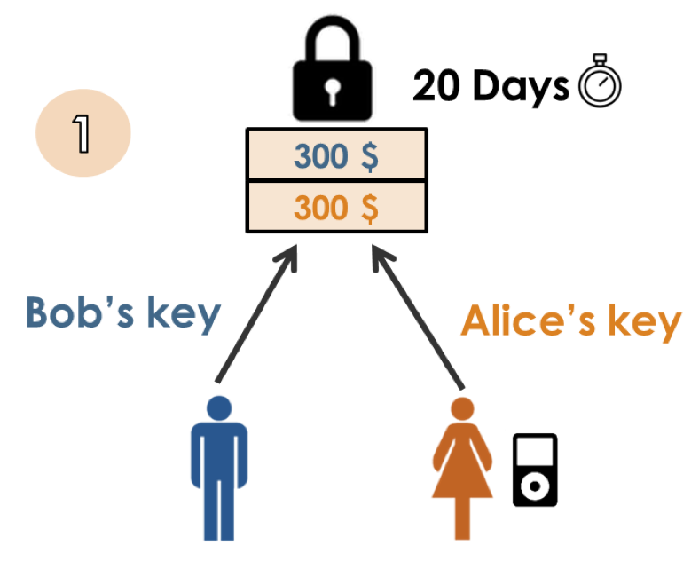
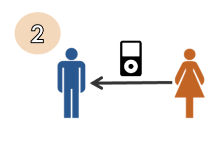
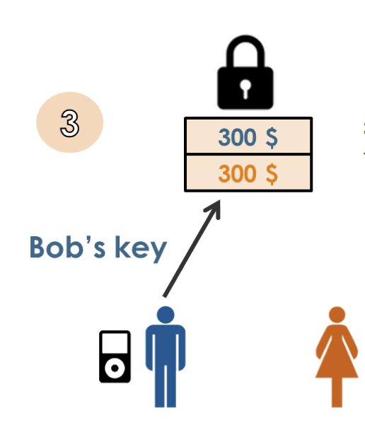
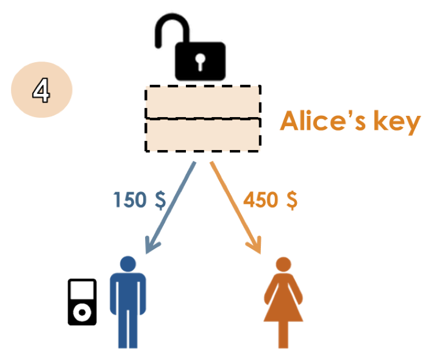

class: center, middle # Piper Merriam ## https://github.com/pipermerriam ## @pipermerriam --- class: center, middle # Ethereum Stuff! --- class: center, middle # Devcon 1 ## https://devcon.ethereum.org/ --- class: left, middle # 250+ Developers # 10+ Companies # ∞ talks --- class: center, middle # Companies --- class: left, middle # Slock It ## http://slock.it/ > Rental of anything that can be locked. --- class: left, middle # Augur ## http://slock.it/ > Prediction Market --- class: left, middle # Prediction Market ## https://en.wikipedia.org/wiki/Prediction_market > *Prediction markets are exchange-traded markets created for the purpose of trading the outcome of events. The market prices can indicate what the crowd thinks the probability of the event is.* --- class: left, middle # Oraclize ## http://www.oraclize.it/ > Trustless (sort of) on-chain Oracles --- class: left, middle # Check out TLS Notary ## https://tlsnotary.org/ --- class: left, middle # Maker ## https://makerdao.com/ > Dai Currency - Stable on chain currency --- class: left, middle # Microsoft > Ethereum Blockchain as a service (via Azure) --- class: left, middle # Far Fetched Things * Insurance * Universal Income * Decentralized Autonomous Organizations (DAO) --- class: center, middle # Technology --- class: left, middle # Swarm > Persistent distributed binary blob storage via IPFS. --- class: left, middle # Whisper > Encrypted messaging protocol * Many to Many * One to Many * Anonymity and Privacy --- class: left, middle # Mist ## Protocol aware browser for Ethereum --- class: center, middle # What's actually happening --- class: left, middle # Banks are interested --- class: left, middle # Estonia's E-Notary ## Public Key based Notary --- class: left, middle # Gaming Fungibles --- class: left, middle # Music (UJO-Music) ## Imogen Heap --- class: left, middle # Scaling ## Caspar (Proof of Stake) --- class: center, middle # A Real Example --- class: left, middle # Escrowless E-Commerce #### https://gatecoin.com/blog/2015/10/blockchain2-disrupting-disrutors/ --- class: center, middle # Seller <> Buyer  --- class: center, middle # Seller Ships Item  --- class: center, middle # Buyer Acknowledges Delivery  --- class: center, middle # Funds Unlocked 